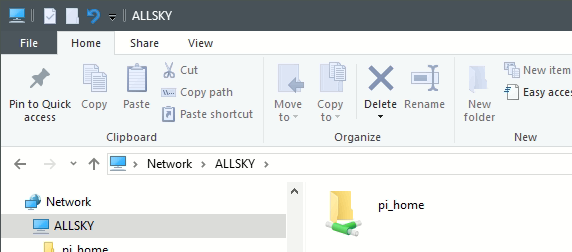
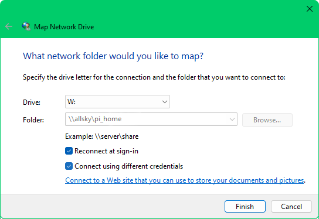
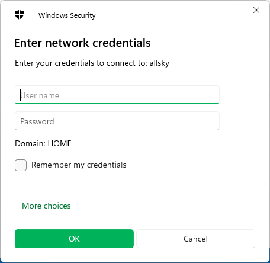

This page describes how to copy files to and from the Pi.
Small text files
If the file you want to copy is a text file and it fits on one screen you can simply highlight the text and copy to the clipboard, then paste it into a file on your PC or Mac.
Other files
For all other files you can mount the Pi's /home/pi directory (or the user you installed Allsky as) onto your PC or Mac using the SAMBA service.
The first step is to install SAMBA on the Pi:
allsky-config sambaFollow the prompts.
When installation is done you should see something like this
on a PC in Windows File Explorer, where ALLSKY is the name of the Pi:

To mount this directory on a PC:
- Right-click the "pi_home" icon and select Map network drive....
You'll see something like:
 - Pick any drive letter you want.
- Check the Connect using different credentials box.
- Click the
Finishbutton. You'll then see a dialog box like this:
 - For the
User name, enterWORKGROUP\pi(replacingpiwith the login you installed Allsky as).
- Use the SAMBA password you entered during installation.
- Check the
Remember my credentialsbox so you don't have to manually log in every time. - Click OK.
SAMBA only needs to be installed once unless you reimage your SD card.